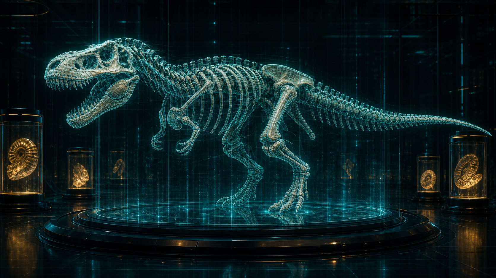

G-01
霸王龙
白垩纪顶级掠食者，展舱正在重建咬合力、颅骨震动和步态冲击波。
- 年代
- 约 6800 万年前
- 扫描状态
- 颅骨校准 94%
Holographic Paleobio Lab
在未来展厅中重建恐龙骨架、琥珀样本与深时化石，让三叠纪到白垩纪的生命信号在全息扫描中重新发光。
Primeval Giants Rotation

白垩纪顶级掠食者，展舱正在重建咬合力、颅骨震动和步态冲击波。
Genome Forge
把化石残留、琥珀孢粉和肌腱附着点合成为可预览的生命模型。
Paleo Habitat Simulator
风速、湿度、捕食压力和植物覆盖率会在舱内形成实时能量流，巨兽模型会依据环境参数更新活动轨迹。
Deep Time Corridor
三叶虫复眼数据正在投射成早期海洋光场。
Mission Control Deck
量子孵化阵列稳定，允许开启下一批巨兽复原任务。
Specimen Archive
Neural Fossil Interface
全息扫描将骨骼、壳体和琥珀纹理转译为可读信号，控制台持续追踪生命形态、环境压力和遗传残影。